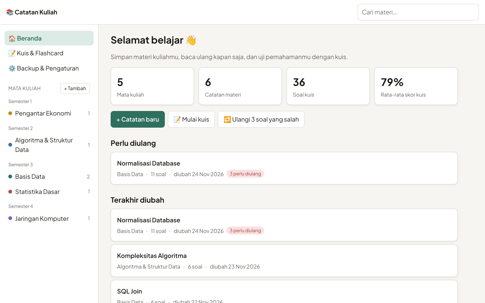
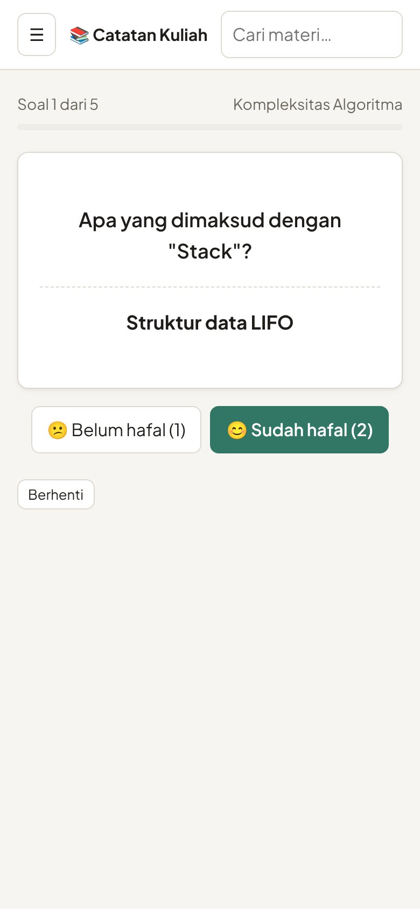
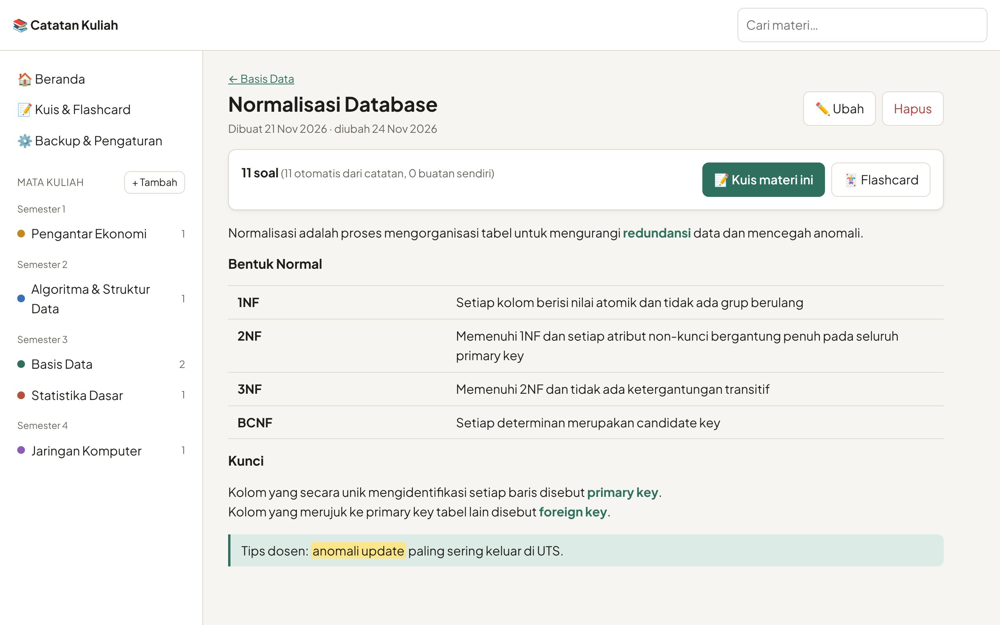
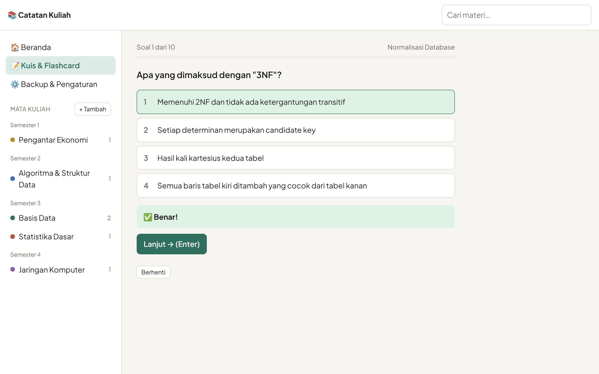

Rapi per mata kuliah & semester
Setiap catatan masuk ke mata kuliahnya dan dikelompokkan per semester. Materi semester lalu tetap mudah dicari.
Simpan semua materi kuliah di satu tempat. Catatanmu otomatis berubah jadi kuis dan flashcard, jadi belajar ulang menjelang UTS dan UAS tinggal klik.


Dari mencatat di kelas sampai latihan soal semalam sebelum ujian, semuanya di satu aplikasi yang ringan.
Setiap catatan masuk ke mata kuliahnya dan dikelompokkan per semester. Materi semester lalu tetap mudah dicari.
Tebalkan istilah penting atau tulis Istilah :: Definisi, lalu soal pilihan ganda dan isian langsung tersedia.
Tambahkan soal pilihan ganda, benar/salah, atau isian lengkap dengan pembahasan, misalnya dari kisi-kisi dosen.
Lihat pertanyaan, coba ingat, buka jawaban, lalu nilai dirimu sendiri. Cocok untuk istilah dan definisi.
Soal yang sering salah muncul lebih dulu, dan ada tombol khusus untuk mengulang semua jawaban yang keliru.
Lihat rata-rata skor, riwayat kuis, dan daftar materi yang perlu diulang langsung dari beranda.
Tidak perlu menyusun soal satu per satu. Cukup dua kebiasaan kecil saat mencatat.
Ketik atau tempel catatan dari slide, buku, atau penjelasan dosen.
Pakai **tebal** untuk istilah kunci dan Istilah :: Definisi untuk definisi.
Mulai kuis atau flashcard per materi, per mata kuliah, atau semuanya sekaligus.
Catatan ditampilkan rapi lengkap dengan subjudul, daftar definisi, stabilo, dan kutipan, sehingga mengulang materi semester lalu terasa ringan.

Setiap jawaban dinilai seketika. Untuk soal isian, salah ketik kecil tetap dianggap benar, jadi yang diuji pemahamanmu, bukan ejaanmu.

Catatan Kuliah memakai sistem kotak Leitner. Setiap soal yang kamu jawab benar naik satu kotak. Kalau salah, soal itu kembali ke kotak pertama dan akan muncul lagi lebih dulu di kuis berikutnya.
Hasilnya, waktu belajarmu habis untuk materi yang memang belum kamu kuasai.
Tidak ada server yang menyimpan catatanmu. Semuanya tinggal di browser perangkatmu sendiri.
Buka dan langsung pakai. Tidak ada formulir pendaftaran atau kata sandi yang perlu diingat.
Catatan, soal, dan skor disimpan di browser. Tidak dikirim ke mana pun dan tidak bisa dilihat orang lain.
Ekspor semua data ke satu file, lalu impor di laptop atau HP lain kapan pun kamu mau pindah.
Ya. Tidak ada biaya, langganan, atau iklan. Aplikasinya berupa situs statis yang bisa langsung dibuka di browser.
Di penyimpanan browser (localStorage) pada perangkat yang kamu pakai. Karena itu, kalau kamu menghapus data situs atau riwayat browser, catatan ikut terhapus. Biasakan mengekspor backup secara rutin lewat menu Backup & Pengaturan.
Bisa. Tampilannya menyesuaikan layar HP. Untuk memindahkan catatan, ekspor backup di satu perangkat lalu impor di perangkat lain. Saat impor, kamu bisa memilih menggabungkan atau mengganti data yang ada.
Ada dua cara. Pertama, otomatis: kata yang kamu tebalkan dengan **dua bintang** jadi soal isian, dan baris Istilah :: Definisi jadi soal pilihan ganda dan soal tebak istilah. Kedua, manual: tambahkan soal pilihan ganda, benar/salah, atau isian sendiri di halaman ubah catatan.
Tidak. Salah ketik kecil (satu sampai dua huruf, tergantung panjang jawaban) tetap diterima. Kamu juga bisa menulis beberapa jawaban alternatif yang dipisah tanda |, misalnya primary key|kunci primer.
Perlu untuk membuka halamannya. Setelah terbuka, menulis catatan dan mengerjakan kuis berjalan langsung di browsermu tanpa mengirim data ke server.
Semakin awal kamu mencatat, semakin ringan belajar menjelang ujian. Buka aplikasinya, buat mata kuliah pertamamu, dan coba kuis dari catatan contoh.
Buka Catatan Kuliah